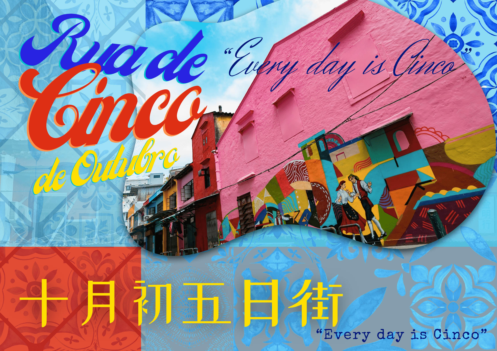
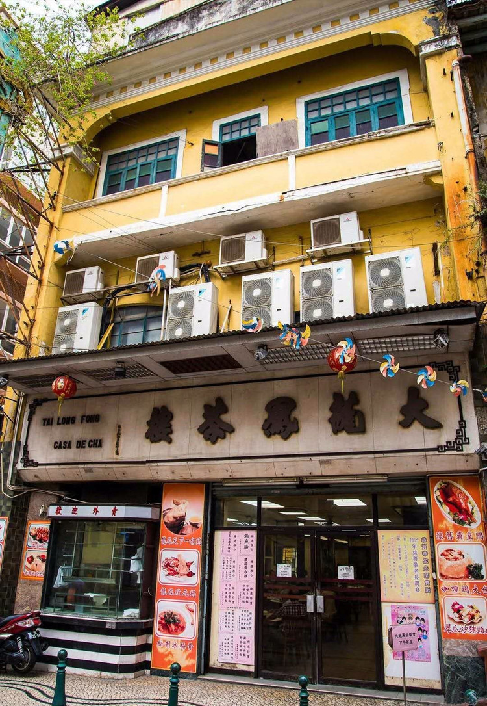
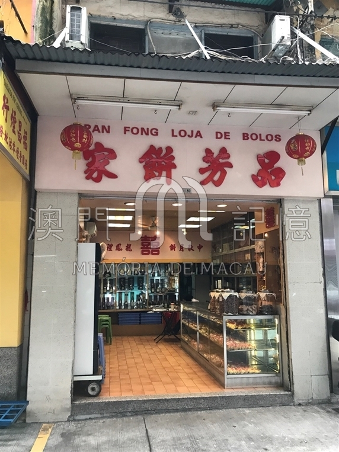
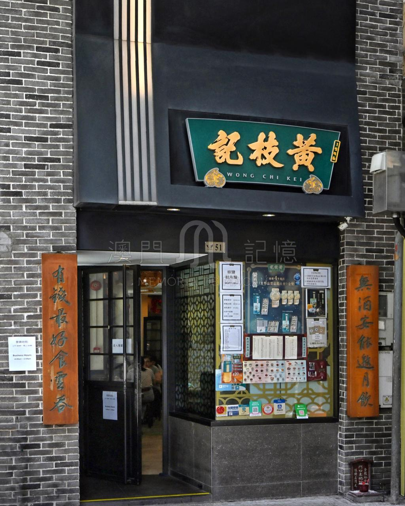
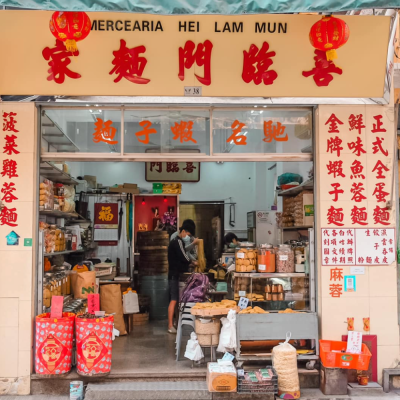
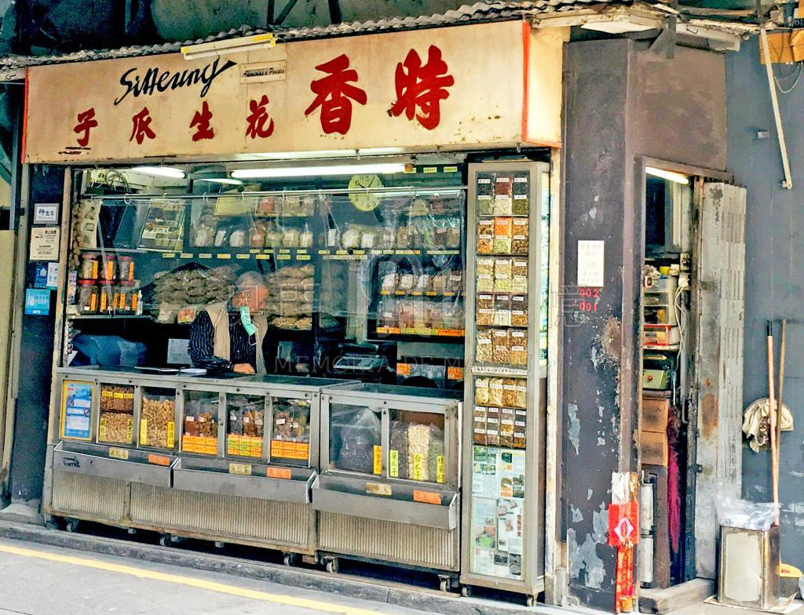
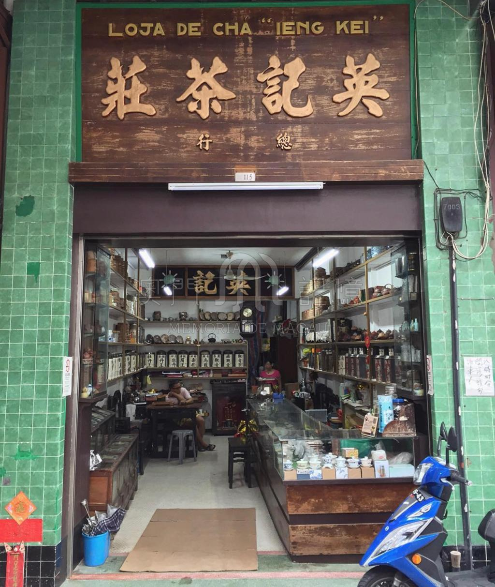
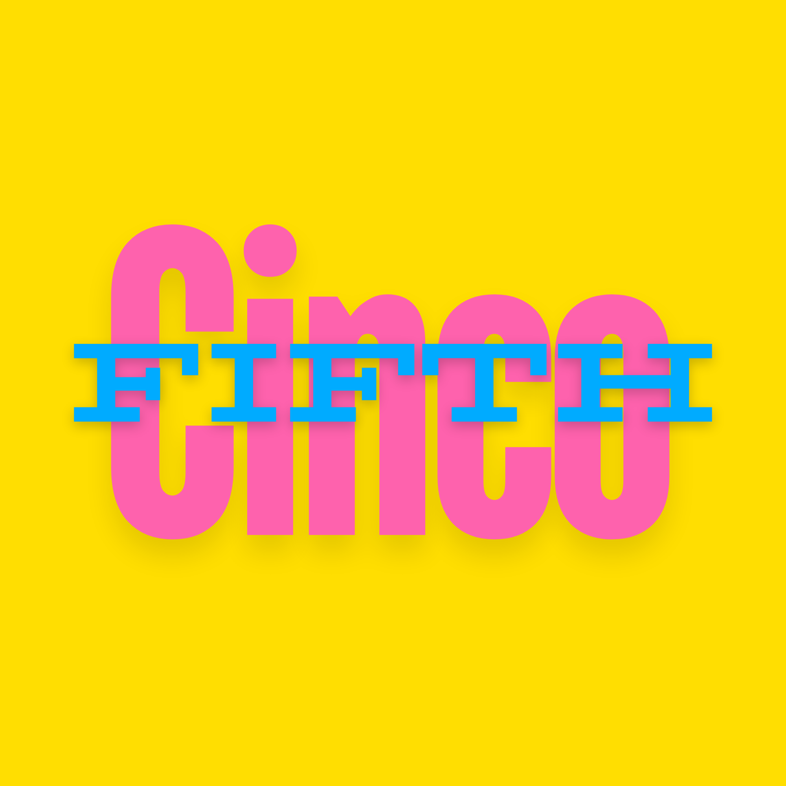

十月初五日街 · Rua de Cinco de Outubro
Every Day is Cinco
Macao's last non-commercialised living heritage street. Where every day is Rua de Cinco de Outubro.

Time-Honoured Shops
Meet the Legends of Cinco
-

Tai Long Fong Casa de Cha
大龍鳳茶樓
Macao’s only Cantonese opera teahouse. A stage where heritage still breathes.
-

Pan Fong Bakery
品芳餅家
Rebuilt from Typhoon Hato’s mud. Three generations of almond cookies and resilience.
-

Wong Chi Kei
黃枝記粥面
Bamboo pole noodles. The founder performed for the President of Portugal at age 80.
-

Hei Lam Mun
喜臨門面家
Refused to raise prices for decades. Handmade shrimp roe noodles since 1958.
-

Si Heung Peanuts
時香花生瓜子
A 1962 time capsule. Metal cart, glass jars, dozens of flavours unchanged.
-

Ieng Kei Tea Shop
英記茶莊
Went viral, then imposed purchase limits. The discipline of saying “no”.
Street Pulse · Cinco
Real-Time Pedestrian Flow
Two ESP32 sensors at street ends passively scan WiFi signals. No personal data is ever stored.
Why Cinco?
Where every day is October Fifth.
Macao’s last non‑commercialised living heritage street. No chains. No casino‑led spectacle. Just six time‑honoured shops, a 160‑year‑old temple, and stories that wait to be discovered.
-
Authentic Stories
Interviews with shop owners become NFC audio clips and AR narratives.
-
Serendipity Walks
Tap a tag. Discover a story. No checklist. No rush. Just wander.
-
Privacy First
ESP32 sensors hash MAC addresses. No tracking. Just gentle crowd guidance.

WebAR · Three Feathers
Point Your Camera at the Rainbow Houses
See 1920s Macao overlaid on today's street. No app download. Just your phone browser.
Launch AR ExperienceSmart Tourism Tech Stack
Five Components · One Seamless Experience
Responsive PWA
Mobile-first website. No app download. Hand-drawn map with 45 audio clips.
NFC / QR Serendipity
12 hybrid tags. Tap to hear shopkeepers. QR fallback for iOS.
WebAR · 3 Feathers
Point camera at temple plaque. See 1860 overlay. No app needed.
ESP32 IoT Sensing
Passive WiFi scanning. SHA-256 hashed. Real-time crowd guidance.
Phased RAG Audio
FAQ buttons first. Then voice AI. Grounded in 600+ verified oral histories.
Heritage Check-in Trail
7 Stops · One Street · How to Play

Pick up your Feather Passport
Scan the QR code at any touchpoint to receive your digital pass. No app – it lives in your browser.
Follow the Three Feathers
Each of the three AR points hides a feather from Siu Co Co. Point your camera at the temple plaque (1860), Rainbow Houses (1920), and the square (today) to collect them.
Tap. Listen. Wander.
7 NFC tags along the street. Tap your phone to hear a shopkeeper's story. No rush – discover them in any order.
Unlock Every Day is Cinco
Collect all three feathers and enter the square. The final AR animation welcomes you: “Now you’re part of it.”